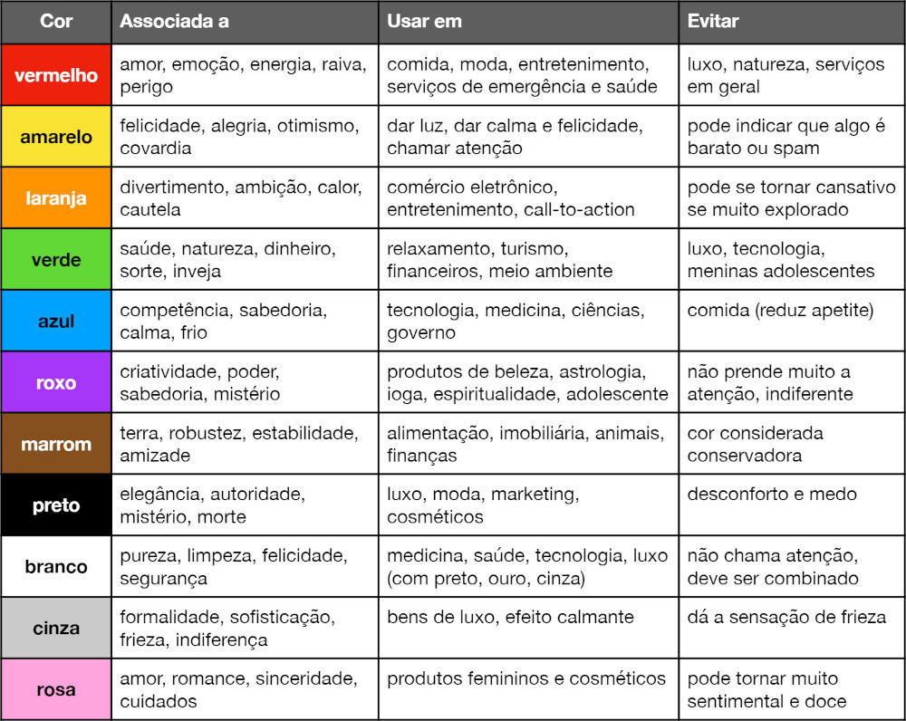

Cores em CSS
Para entender esse exercício, olhe bem atentamente o código fonte do arquivo.
Este título está colorido usando cores por nome
Já esse está usando cores pelo código Hexadecimal
Este outro está colorido usando códigos RGB (red, green, blue)
Este outro aqui está usando códigos HSL (hue, saturation, light)
As cores resultantes são exatamente as mesmas, mas o formato de representação muda conforme o padrão escolhido.
Também é possível usar transparência, usando o formato RGBA (red, green, blue, alpha)
Nesse título, o fundo preto teve sua transparência configurada para 50%
Esta imagem encontra-se presente no PDF do curso
